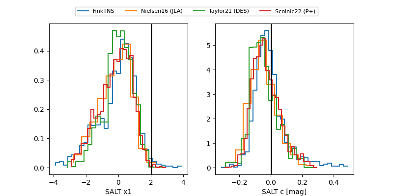

TNS: 2025wwq
YSE: 2025wwq
2025wwq (yse,tns)
ATLAS25law (atlas)
PS25hmh (panstarrs)
equatorial (ra, dec) = (54.8988,-23.83138)
galactic (l, b) = (217.5815,-52.07945)

last atlasc=17.00, atlaso=17.28, ps1::w=17.36
2 atlasc, 7 atlaso, 4 ps1::w detections